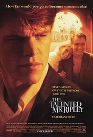
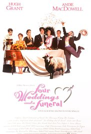

I'm a developer-in-training with a penchant for languages and the web. I've created articles for InVision, Atomic and Azendoo. I'm currently living in Bordeaux, and am looking for a Ruby on Rails placement in Paris. When I'm not practising my code, you'll find me at the swimming pool or cooking for friends.
|  |
The Talented Mr RipleyAn adaptation of the 1955 Patricia Highsmith novel of the same name, the film stars Matt Damon as Tom Ripley, Jude Law as Dickie Greenleaf, Gwyneth Paltrow as Marge Sherwood and Cate Blanchett as Meredith Logue. |
Tinker, Tailor, Soldier, SpyIn 1970s England the head of MI6, Control (John Hurt), dispatches an agent (Mark Strong) to meet with a Hungarian general who knows the identity of a Soviet spy in the organization's ranks. However, the mission goes wrong, and the general dies before he can reveal the information. |
|
|  |
Four Weddings and a FuneralFour Weddings and a Funeral is a 1994 British romantic comedy film directed by Mike Newell.Over the course of five social occasions, a committed bachelor must consider the notion that he may have discovered love. |